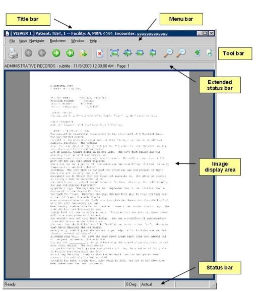

Open topic with navigation
The active viewer window has a highlighted title bar. Click anywhere in the image display area to activate a window.

Related topics
Title bar
Viewer menus
Toolbars
Status bars
Image display area